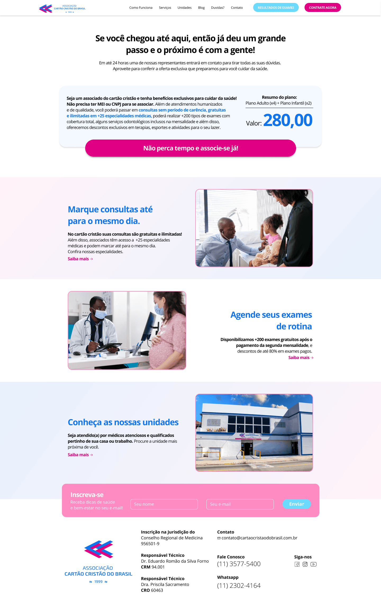

Projetos Selecionados

Simulação de Planos de Saúde
Redesenho completo do fluxo de simulação da Associação Cartão Cristão, eliminando atritos de usabilidade e alavancando a taxa de conversão de novos associados.

Supermercado Bom Vizinho
Estratégia de imersão, benchmarking e prototipação no Figma para criar a presença online própria de uma rede de 20 anos com controle sobre a experiência.

Corpo Seco: A Maldição do Vale
Experiência imersiva de terror 3D sem HUD intrusivo: a lanterna, a névoa e o áudio espacial comunicam o perigo diretamente ao jogador.
em taxa de conversão com redesign de fluxo (CRO)
unindo Design Gráfico, UX e Neurociência
prototipação interativa e Design Systems no Figma
projetos interativos 3D e WebGL jogáveis na web
Apresentando-me
Sou UX Designer, formado em Design Gráfico com pós em UX e em fase de conclusão da pós em Neurociência do Desenvolvimento.
Atuo na criação de estratégias de produto, análise de dados e acompanhamento de métricas para otimizar continuamente a experiência do usuário. Desenvolvo briefings, arquitetura de informação, wireframes e protótipos de alta fidelidade no Figma, buscando soluções consistentes e com base analítica.
Atualmente atuo como UX Designer na EasyChange. Minha trajetória profissional inclui passagens como Designer Instrucional na Neogrid, Web Designer na Associação Cartão Cristão do Brasil e Estagiário em UX/UI na Nesta.
Imersão & Métricas
Mapeio dores dos usuários, analiso dados de navegação, funis de conversão e benchmarking concorrencial.
Design System & Figma
Defino fluxos objetivos, guias de estilo atômicos e protótipos navegáveis de alta fidelidade.
Testes & CRO
Avalio atritos cognitivos, testo hipóteses reais e garanto a implementação fiel junto ao time de engenharia.
Projetos
Alterne entre os projetos profissionais de trabalho e os projetos experimentais de jogos.
vamos construir experiências de produto juntos?
Conte mais sobre o seu desafio de UX, produto digital ou projeto interativo. Estou sempre aberto a novas oportunidades e trocas.